Produtos
Formas de buscar um produto (PLU)
A balança foi desenvolvida para a realização de busca de produtos de diversas maneiras:
- Busca por termo livre
- Acesso rápido (Os produtos deverão estar associados as teclas de acesso).
- Busca por código ou nome do produto.
Em Programação - Cadastro - Produtos PLU são encontrados os procedimentos necessários para criar, editar o excluir um produto (PLU) na balança.
Para associar os ítens as teclas de acesso rápido consultar os procedimentos descritos em Programação Geral - Cadastro - Acessos
A. Busca de produto por termo livre
A título de exemplo, executaremos a venda de um produto designado na balança como genérico (vendido por peso ou unidade) e identificados de fábrica com o número zero.
Este modo de venda não requer configuração do produto.
Digite o número zero no campo localizado na margem inferior.
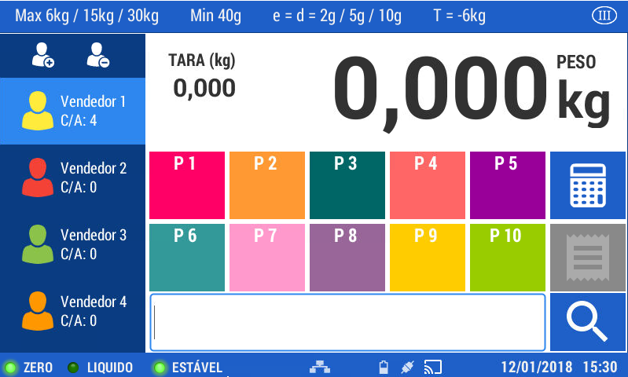
Pressione a tecla
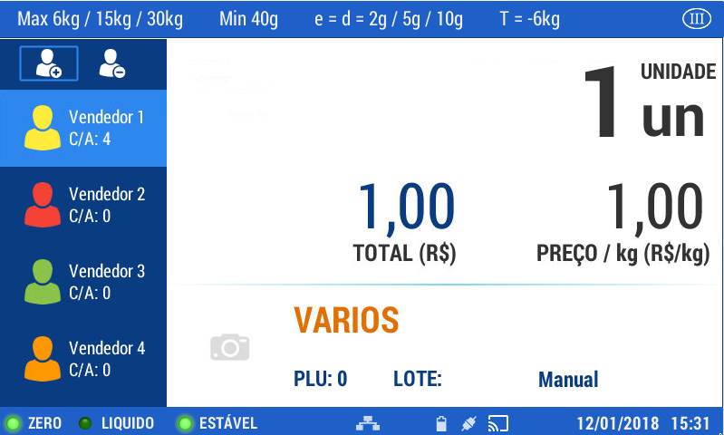
Coloque o produto sobre o prato.
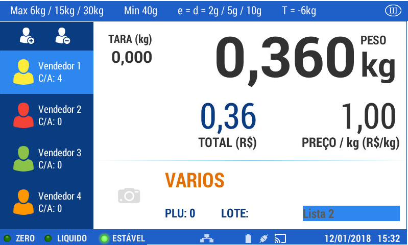
Pressione a tecla para registrar a venda.
Retire o produto da bandeja. Repita esta operação para todos os produtos a serem vendidos
Pressione a tecla para visualizar os detalhes da venda.
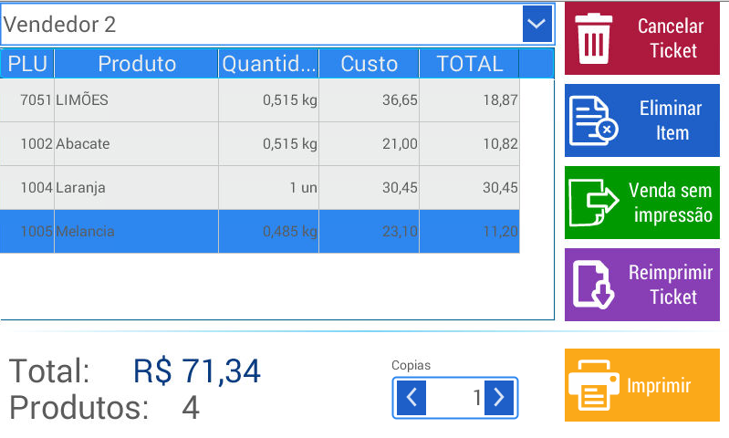
Nesta tela é possível realizar as seguintes operações:
- Cancelar ticket: cancela o ticket.
- Excluir itens: exclui da operação de venda o item selecionado.
- Venda sem impressão: permite encerrar a venda sem imprimir o comprovante.
- Imprimir: imprime o comprovante de venda.
Reimprimir Ticket: imprima um ticket já impresso. Para facilitar a busca pelo recibo, você pode aplicar filtros e depois selecionar o tíquete para reimpressão (veja as imagens)
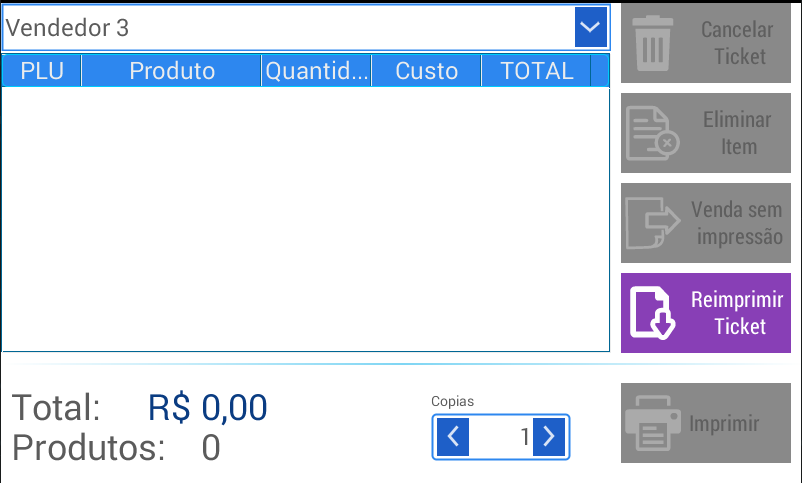
Selecione a opção de reimpressão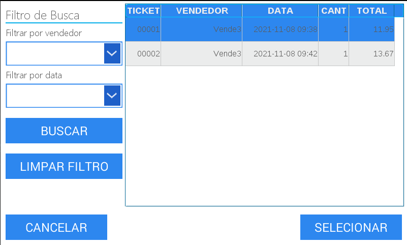
Selecione o item desejado, pressione selecionar e, em seguida, pressione imprimir- Cópias: determina a quantidade de cópias a imprimir.
Selecione a opção que deseja para finalizar.
Ao pressionar o teclado numérico é habilitada a opção para colocar o valor recebido e calcular o troco a ser devolvido (estas informações serão impressas ao finalizar a venda)
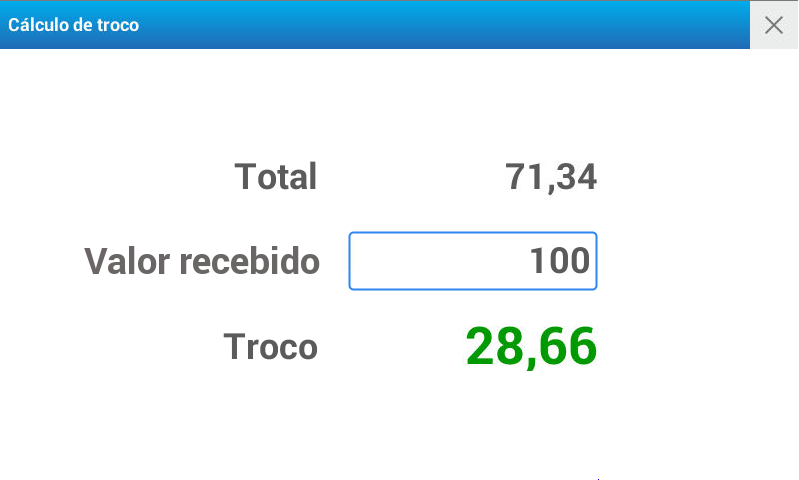
Pressione a tecla para concluir.
B. Venda pelo teclado de acesso rápido
A título de exemplo, realizaremos una venda por peso, de um produto configurado na balança com nome de Produto vendido por peso - PLU N° 2 - Preço por quilo R$ 18,59
Selecione a página de acesso rápido onde foi cadastrado o produto
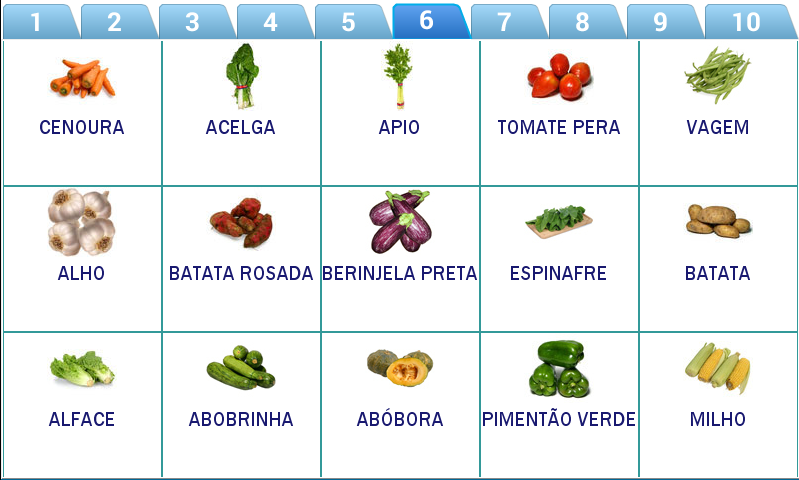
Clique sobre a tecla de acesso rápido correspondente ao produto cadastrado
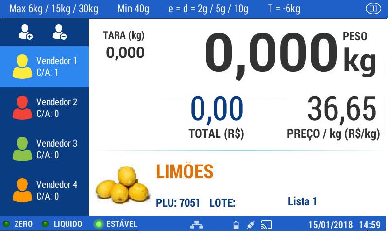
Coloque o produto sobre o prato da balança
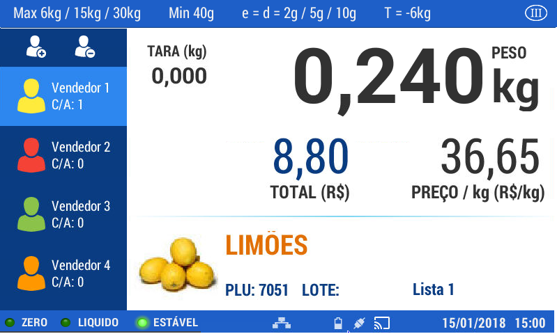
Uma vez estabilizado o peso, pressione
Retire o produto da balança
Realize esta operação para os demais produtos a serem vendidos.
Utilize os passos descritos no exemplo anterior.
Com a finalidade de apresentar os diversos recursos presentes na balança para a comercialização de produtos, descreveremos a seguir os passos para efetuar a venda de produtos drenados dentro da alternativa de acesso rápido.
Para exemplificar a comercialização de produtos drenados, realizaremos a venda de um produto configurado na balança com o nome de Exemplo Drenado - PLU Nª 3 - Preço por quilo R$ 16,46
Selecione a página de acesso rápido onde está cadastrado o produto

Pressione a tecla de acesso rápido correspondente a Exemplo Drenado.
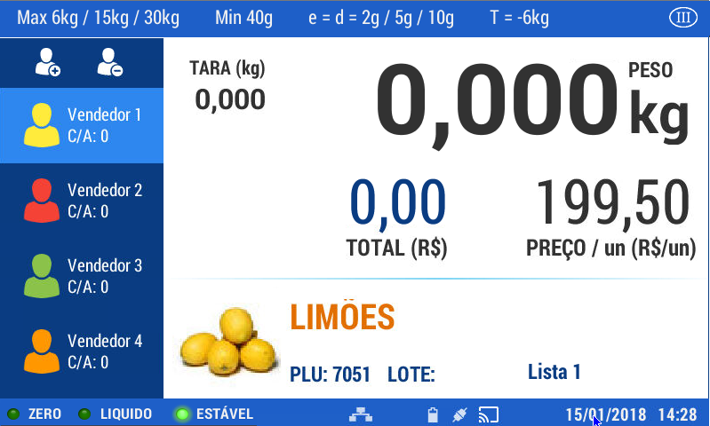
Pressione
Será visualizado a seguinte tela:
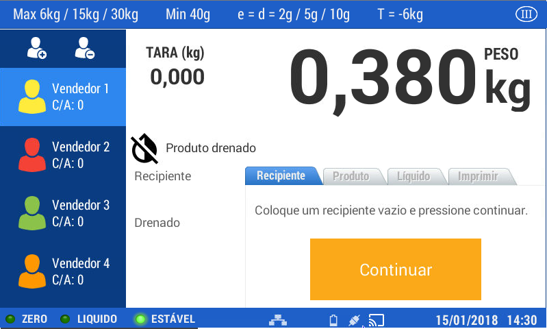
Pressione
Coloque primeiro o recipiente que contém o produto e pressione continuar
Coloque sobre a bandeja o produto drenado e pressione novamente continuar
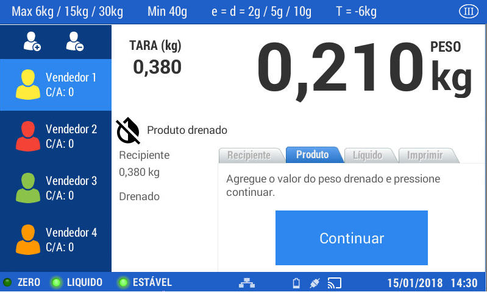
Agregue o líquido e pressione continuar
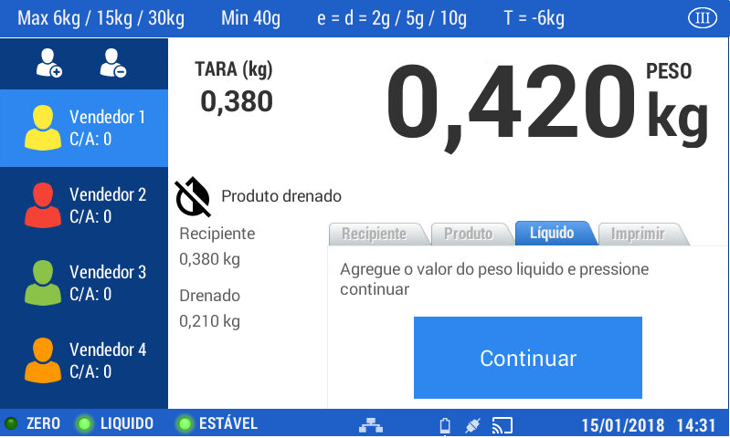
Em seguida, pressione continuar
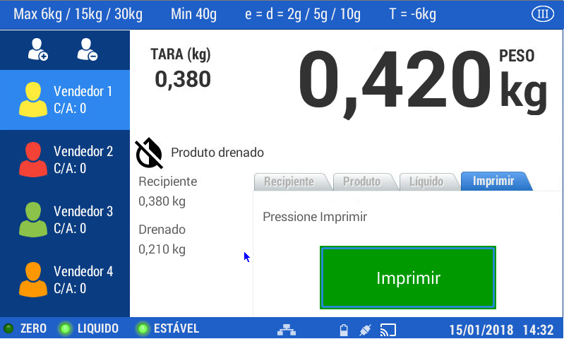
Em seguida, pressione imprimir
Retire o produto da balança
No caso de pesar outro produto drenado, repita os passos anteriores.
C. Busca por código ou nome do produto
A título de exemplo, realizaremos agora uma venda por unidade, de um produto armazenado na balança com o nome de Produto vendido por unidade - PLU 1- Preço por unidade R$12,23
Pressione o botão de lupa.
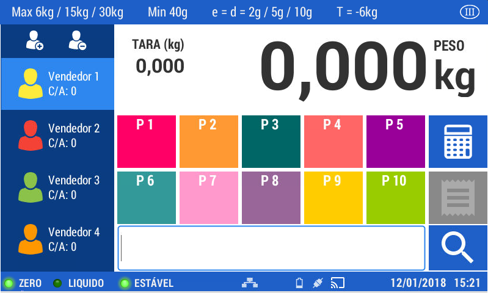
Dentro desta opção é possível realizar as buscas de diversas maneiras:
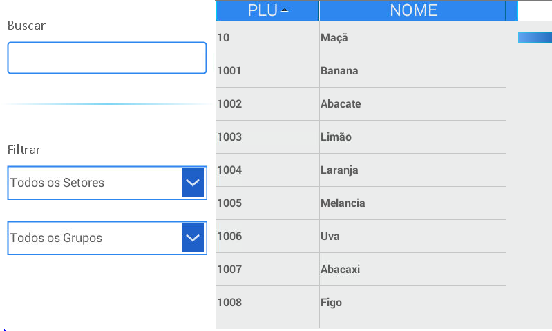
- Pressione a tecla para ativar o teclado alfanumérico: insira o nome do produto a ser buscado ou troque pelo teclado numérico e insira o código.
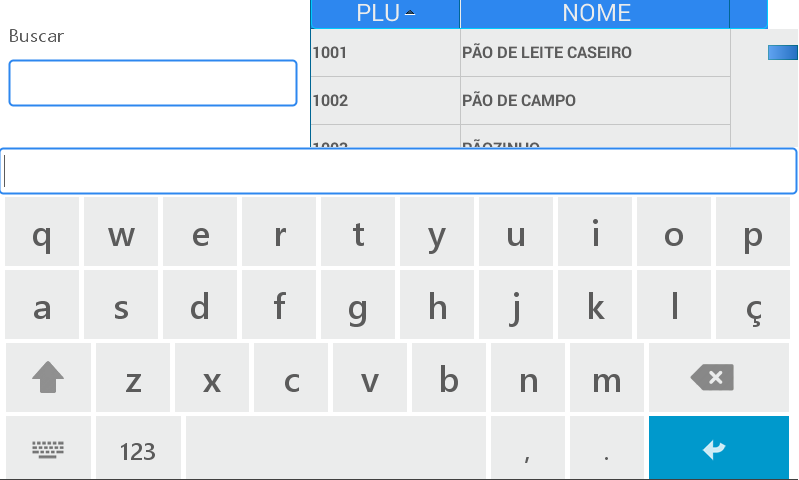
- Deslocando a lista são exibidos os resultados.
- Utilizando os filtros estabelecidos na margem superior.
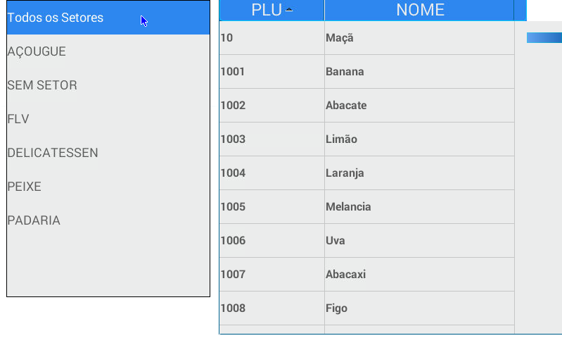
Assim que localizado o item desejado, clique para selecionar-lo. é visualizado o produto escolhido.
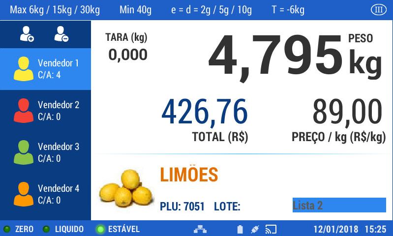
Pressione a tecla para ativar o campo habilitado para alterar o número de unidades a serem vendidas.
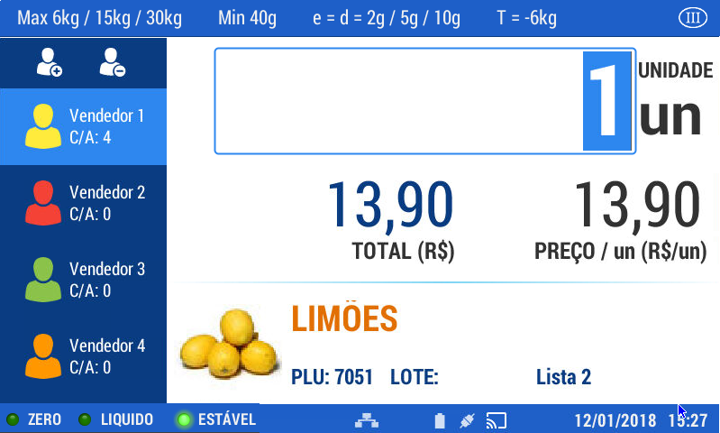
Utilize o teclado numérico para colocar a quantidade desejada e pressione uma única vez para continuar com a venda ou duas vezes para finalizar.
Prossiga com os passos descritos nos itens anteriores.